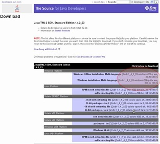
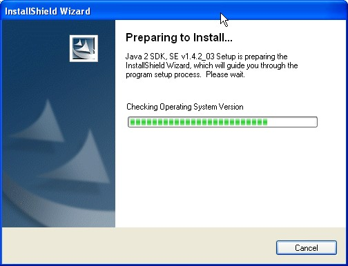
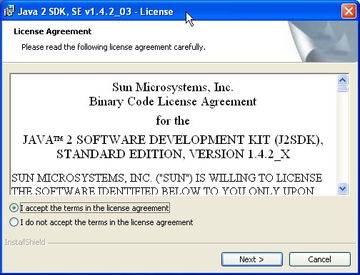
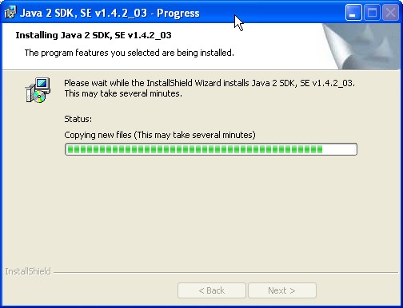
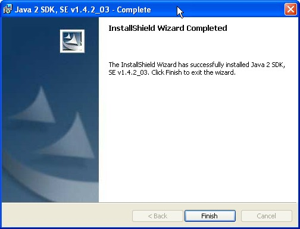
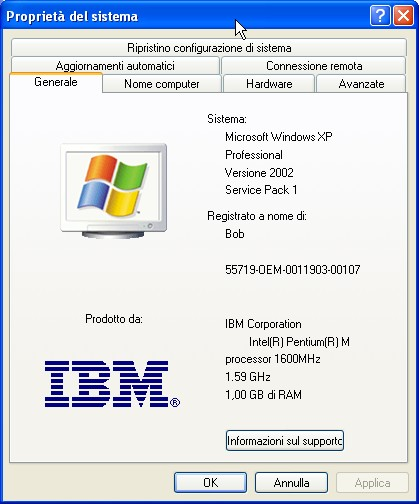
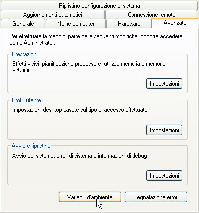
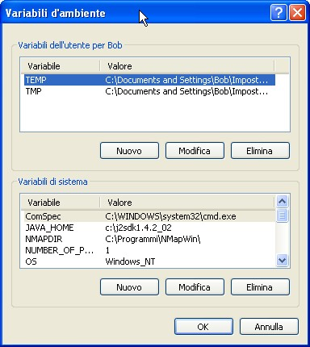
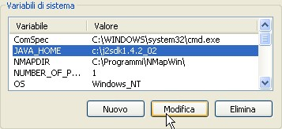
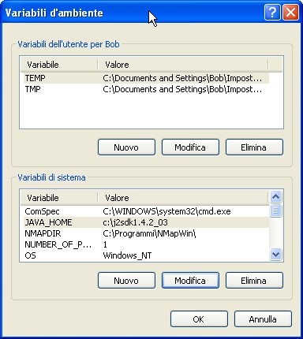

Let's point our browser to the following URL: http://java.sun.com/j2se/1.4.2/download.html
The section “Download J2SE” is what we are looking for (at the time of this writing it is the second section).
Look at the following picture to locate it:
(click here for a larger picture)
In the next screen you will see that the Download J2SE section contains many lines, mostly one per each operating system. It also indicates that you can download either the runtime environment (JRE) or the full Java Development toolkit ((SDK). As indicated by the red ellipse we will be choosing the latter by clicking on the download link.
On the next screen just click to accept and continue:

(click here for a larger picture)
For Windows we have two lines. I could use the first (Offline Installation) which will yield a larger file to download but the resulting file can be installed also on machines without an Internet connection.
This time I decided to use the small online installer which implies installing on a machine which is (hopefully well) connected to Internet.

(click here for a larger picture)
The installer is small and downloads quickly.

Launch it and now the "real" installation starts.

As always accept the agreement 8->

From the following screen please note that the SDK on top of the full development enviromnent which by default will get installed to c:\j2sdk1.4.2_03, will also install a JRE (runtime environment) which by defualt goes into your programs folder (in my case C:\Programmi) under a Java\jre1.4.2_03 directory.

The installation will now download a lot of stuff from the network and will alternate many similar small windows. Just go and have supper.

Hopefully when you come back, you will see everything is over.

Now dont' ask me why. The installation with the offline installer of version 1.4.2_02 will eat up 275MB of disk space. The install with the online version of the 1.4.2_03 will occupy only 80MB (plus the JRE). Simply accept all default values and take note of the place where the JDK and/or the JRE will be installed.
You might want to check that the installation has properly setup two environment variables:
JAVA_HOME should point to the directory in which you have just installed the JDK. If you have chosen the default places it will be:
JAVA_HOME=c:\j2sdk1.4.2_03 or similar.
The PATH variable should contain the following: %JAVA_HOME%\bin
In XP you can check the environment variables by opening a shell window (also called a DOS window for historical reasons ) and typing the SET command or right click on the "My Computer" icon and you get:

Now click on the "Advanced" (Avanzate in my Italian version) tab.

And here click on the "Environment Variables" (Variabili d'ambiente) button.

From here I have seen that my JAVA_HOME existed but points to an older release (1.4.2_02)

I want to point to my new 1.4.2_03 and therefore select JAVA_HOME and click on the Modify (Modifica) button and edit the field. In the next screenshot you can see that JAVA_HOME now points to 1.4.2_03.

In the same fashion you can check if thePATH variable contains the following: %JAVA_HOME%\bin
{kind=link}
{kind=link}
{kind=link}